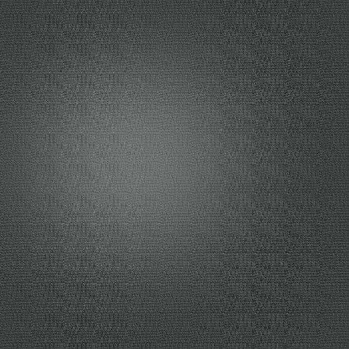

IPHONE NETWORK

QUELLO CHE POTREMMO ASPETTARCI ALLA WWDC 2022
Alla WorldWide Developers Conference (WWDC) di quest’anno vedremo l’annuncio di iOS 16 dove stanno spopolando un sacco di leak sul web. In questo screenshot possiamo vedere una vagonata di nuovi widget, come un nuovo design per il widget dei suggerimenti di Siri, un nuovo widget con dei toggle per la torcia, un regolatore della luminosità e un collegamento al telecomando per l’Apple TV e infine un nuovo widget per il cronometro
Per la nuova release di macOS, macOS 13 Mammoth dovremmo vedere un nuovo design della barra dei menu che è rimasta per lo più la stessa fin dal primo Macintosh nel 1984, inoltre potremmo anche vedere l’arrivo della Libreria App che troviamo su iPhone e iPad per sostituire l’ormai datato Launchpad.
Dovremmo vedere pura le nuove versioni di tvOS 16 e watchOS 9 ma al momento non abbiamo molte notizie o screenshot ma, conoscendo apple, sappiamo già cosa aspettarci